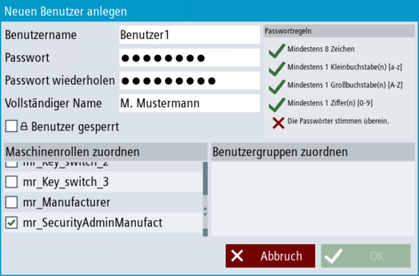

Einleitung
Wenn Sie einen neuen Benutzer anlegen möchten, können Sie den Dialog "Benutzer anlegen" nutzen. Sie können lokale Benutzer anlegen, unabhängig davon, ob ihre Domäne mit einer zentralen Benutzerverwaltung verbunden ist oder nicht.
Voraussetzung
Vorgehensweise
-
Im Bedienbereich "Inbetriebnahme" rufen Sie die Benutzerverwaltung über die Softkeys "Security > Benutzerverwaltung" auf.
-
Klicken Sie auf den Softkey "Benutzer". Klicken Sie auf der Übersichtsseite auf "+ Benutzer", um einen neuen Benutzer anzulegen. Ein Pop-Up Dialog öffnet sich.

Neuen Benutzer anlegen
-
Vergeben Sie einen beliebigen eindeutigen Benutzernamen für den Benutzer und ein individuelles Passwort.
|
Hinweis
|
Passwort-HInweise
-
Beachten Sie, dass bei der Vergabe des Benutzernamens Sonderzeichen nicht erlaubt sind.
-
Das Passwort muss den Regeln entsprechen, die im Dialog Richtlinien definiert sind. Wenn über den Dialog Richtlinien keine individuellen Passwort-Regeln definiert sind, muss das Passwort den vorgegebenen Standard-Passwort-Regeln entsprechen. Das Passwort muss mindest aus 8 Zeichen bestehen. Es muss mindestens einen Kleinbuchstaben, einen Großbuchstaben und eine Ziffer enthalten. Empfehlungen für die Vergabe von sicheren Passwörtern finden Sie im .
-
Falls Sie sich an alle definierten Passwort-Richtlinien gehalten haben und das Passwort nicht akzeptiert wird, besteht die Möglichkeit, dass im Dialog Richtlinien die Option "Letze X Passwörter nicht verwenden" aktiviert ist. Sie haben dann vermutlich ein bereits genutztes Passwort festgelegt. Legen Sie ein neues Passwort fest, ändern Sie den Wert der Option oder deaktivieren Sie die Option.
-
Mit dem definierten Benutzername und Passwort meldet sich der Benutzer in SINUMERIK Operate an (siehe Benutzer anmelden).
|
-
Wiederholen Sie das Passwort.
-
Tragen Sie optional den Vor- und Nachnamen des Benutzers ein, der dem Benutzernamen und dem Passwort zugeordnet werden soll. Der vollständige Name (bzw. die Initialen davon) werden für die Identifzierung des Benutzers im Anmelde-Button herangezogen. Wenn kein vollständiger Name hinterlegt wird, wird der Benutzername herangezogen. Beachten Sie in diesem Zusammenhang die zentralen Hinweise zur Datenschutzgrundverordnung.
-
Wählen Sie optional ob Sie einzelne Benutzer sperren möchten, um zu verhindern, dass sich der Benutzer im System anmelden kann. Wenn ein Benutzer z. B. temporär das Unternehmen verlässt, können Sie seinen Benutzer-Account sperren, statt ihn zu löschen.
-
Weisen Sie dem Benutzer auch direkt einer Maschinenrolle zu.
Dies kann z. B. sinnvoll sein, wenn Sie neben den Standard Security Admins der Domäne noch weitere Security Admins anlegen. Dann können Sie den Benutzer direkt mit der Machinenrolle "Security Admin" verknüpfen. So können Sie verhindern, dass die lokale Benutzergruppe beim Verbinden mit der zentralen Benutzerverwaltung möglicherweise gelöscht wird.
-
Weisen Sie dem Benutzer eine Benutzergruppe zu, wenn Sie diese bereits angelegt haben. Wählen Sie dazu eine oder mehrere Benutzergruppen aus, denen der Benutzer angehören soll.
-
Klicken Sie nun auf "OK", um den neuen Benutzer in die Liste der Benutzer zu übernehmen. Legen Sie bei Bedarf weitere Benutzer an, indem Sie die Schritte 2-7 wiederholen.
|
Ergebnis
Sie haben nun einen oder mehrere Benutzer vollständig angelegt.